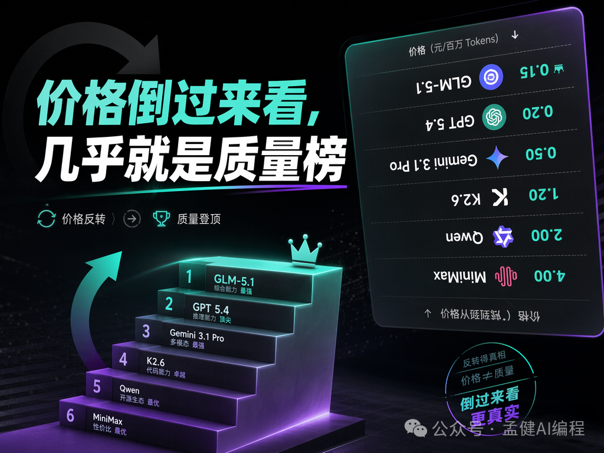
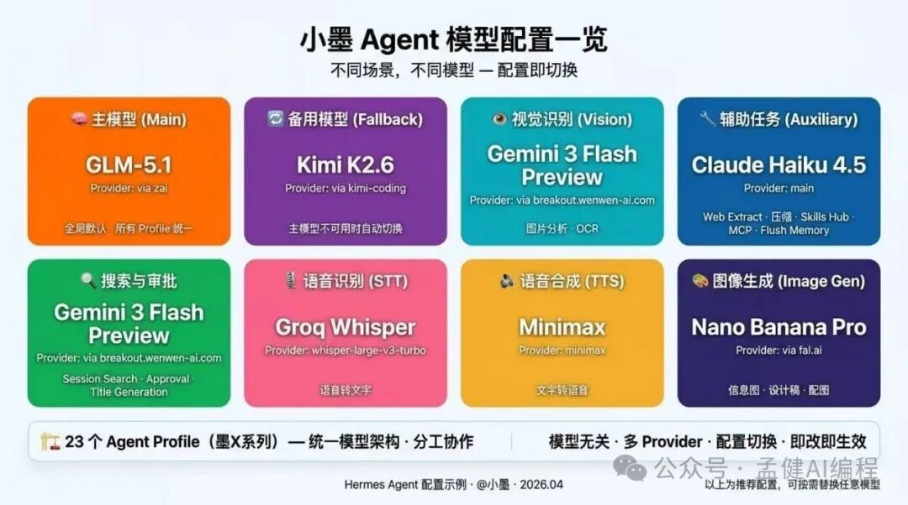
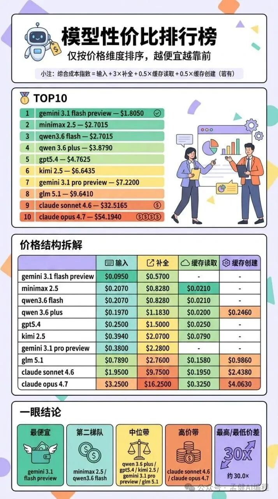
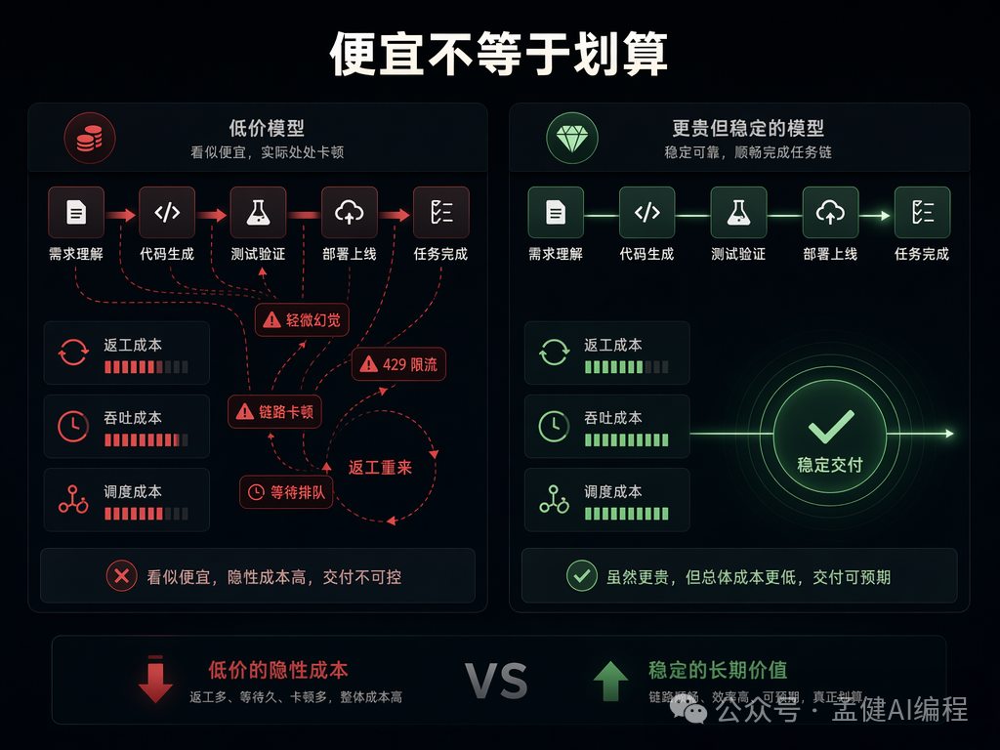
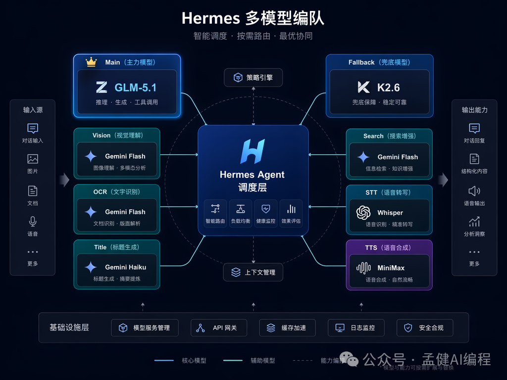
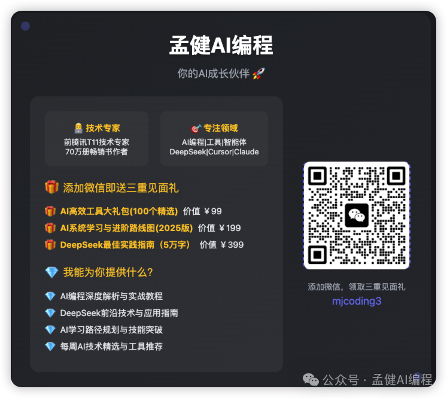

Hermes 生产 Agent 模型横评：价格倒序约等于质量榜，GLM-5.1 执行欲最强但有限频硬伤
来源：微信公众号 归档日期：2026-04-24 抓取状态：成功 原文字符：5735｜配图：6 张
摘要速览
在 Hermes 生产环境中（多 Agent、长流程、代码任务），不同模型的真实表现与 benchmark 排名差异显著——本文给出一手生产体感排序和选型逻辑。
核心内容
- 选型核心三问：能不能把活干完 / 干得稳不稳 / 废话多不多（不是单轮聊天，不是刷榜）
- 隐形成本三笔账：返工成本（幻觉导致整轮重跑）+ 吞吐成本（废话放大到几十个 session）+ 调度成本（限频/卡顿/上下文松动拖慢链路）
- 生产体感排序：GLM-5.1（第一） > GPT-5.4 / Gemini-3.1 Pro > K2.6 > Qwen > MiniMax（工具型补位）
- GLM-5.1 优势：执行欲强（给任务直接动手，不铺垫）、中文工程语境稳（路径/配置/环境变量吃得好）、长流程不松（推进感强）；硬伤：限频，多 Agent 并发时 429 切碎节奏
- GPT-5.4 问题：太啰嗦，每次复述任务 + 总结，多 session 吞吐成本高
- K2.6 问题：慢 + 轻微幻觉（替你做没被授权的假设），自动链路里会变成返工
- 模型编队思路：主模型追上限 / Fallback 追稳定 / 辅助位（OCR/标题生成/Web Extract 等）用性价比高的；不是 all in 一家，而是把 Hermes 当模型调度层
可执行启发
（待补充）
我的想法
（待补充——1. SXL 当前框架用的主力模型是什么，是否遇到过"废话成本"或"限频"问题？2. 模型编队思路（主力/Fallback/辅助）对 SXL 的 Agent 体系有没有借鉴价值？）
为什么有用
SXL 的 chairman/novel-master 等 Agent 若未来接入 Hermes 或类似框架，GLM-5.1 的"执行欲强+中文语境稳"特性直接对口；限频硬伤需要为多 Agent 并发场景预留 Fallback。
适用 / 不适用场景
- 适用：Hermes 生产框架下的主力模型选型、多 Agent 编排的模型分层配置
- 不适用：单轮聊天体验评测（结论不适用）、非中文工程场景（GLM 优势不明显）
原文：孟健AI编程
这几周我在 Hermes 里来回切了很多模型。真跑下来，我越来越确认一件事：模型的水平，很多时候早就写在价格里了。
主观体感排序（生产 Agent 任务）：
- 第一梯队：GLM-5.1
- 第二梯队：GPT-5.4、Gemini-3.1 Pro
- 再往后：K2.6、Qwen
- 工具型补位：MiniMax
选主力模型看三件事：能不能把活干完、干得稳不稳、废话多不多。
隐形账不只在 API 单价：返工成本（幻觉）+ 吞吐成本（废话）+ 调度成本（限频/上下文松动）。
GLM-5.1：执行欲强，中文工程语境顺，长流程不松。硬伤：限频，多 Agent 并发 429 切碎节奏。
GPT-5.4：聪明但啰嗦。先复述任务、再执行、再总结，多 session 放大后成本和等待都上去。
K2.6：上限不低，但慢，有轻微幻觉（细节上替你做没被授权的假设）。自动链路里会变成返工。
MiniMax：轻量助手，速度快成本低，扛不了复杂流程。
Qwen：中规中矩，无明显短板也无明显惊喜，是"可用选项"不是"必须选项"。
模型编队思路：
- 主模型：谁最能干活用谁
- Fallback：谁更稳用谁兜底
- 辅助模型（Web Extract/标题生成/OCR）：谁便宜够用用谁填坑
结论：今天的模型市场，价格体系已经比很多榜单更诚实。把性价比榜倒过来看，基本就知道谁做主力、谁当备胎、谁干杂活。
原文沉淀
目录
大家好，我是孟健。
这几周我在 Hermes 里来回切了很多模型。真跑下来，我越来越确认一件事：模型的水平，很多时候早就写在价格里了。把性价比榜倒过来看，八九不离十就是质量排行。
这不是 benchmark 结论。
是我把 Hermes 当生产底座，拿它去跑多 Agent、长流程、代码任务、资料整理之后，交出来的体感排序。


先给排序：贵，很多时候不是乱贵
先看这张图。

图里是按价格排的：便宜的在前，贵的在后。
但我这轮实际测下来，如果你把它倒过来看，它反而更像质量榜。
我的主观体感大致是这样：
- 第一梯队：GLM-5.1
- 第二梯队：GPT 5.4、Gemini 3.1 Pro
- 再往后：K2.6、Qwen
- 更偏工具型补位：MiniMax
这里我说的是拿来当 Hermes 的主力生产模型，不是单轮聊天，也不是刷榜题。
主力生产模型看三件事：能不能把活干完，干得稳不稳，废话多不多。
为什么我会说“价格倒过来接近质量榜”？因为模型真正的成本，从来不只在 API 单价里。
你还要算三笔隐形账：
- 返工成本：一次轻微幻觉，可能换来一整轮重跑
- 吞吐成本：一句多余解释，放到几十个 session 里就是半天
- 调度成本：限频、卡顿、上下文松动，都会把整条链路拖慢
所以很多看起来便宜的模型，只是在账单上便宜；放进生产链路里，未必便宜。

只要你真的拿它跑 terminal、browser、文件系统、长上下文、多轮追踪，排序会和很多宣传页很不一样。
便宜，不代表划算。真正贵的是便宜模型把你一天节奏拖烂。
为什么我现在把 GLM-5.1 放在最前面
这轮测试里，GLM-5.1 给我的评价是最高的。
不是因为它最便宜。恰恰相反，按图里的综合成本，它并不便宜。
我把它排到最前，原因只有一个：它在真实 Agent 任务里，表现比价格更强。
和 GPT 5.4、Gemini 3.1 Pro 放一起看，GLM-5.1 的优势主要有三个：
- 执行欲更强
。给任务就动手，不爱铺垫，不爱讲场面话。
- 中文工程语境更顺
。路径、配置、环境变量、中英混合说明，它吃得更稳。
- 长流程里不容易松掉
。做多步任务时，推进感更强。
这也是为什么我现在会把它放在 Hermes 的主模型位优先考虑。
但它不是没缺点。
GLM-5.1 最大的问题，不是能力，是限频。
单 Agent 跑还好。
一旦多 Agent 并发，429 和等待就会把节奏切碎。你明明感觉它脑子够用，但系统吞吐上不去。这也是它今天唯一一个会让我犹豫的点。
其他几个模型，我的真实评价
GPT 5.4：强，但太啰嗦
GPT 5.4 的问题不是不聪明。
是太爱解释自己。
你让它改配置，它先给你复述任务；你让它查问题，它先写思路；做完之后还想再总结一遍。单次对话里这叫“服务感”，放到 Agent 流程里，这叫拖慢吞吐。
一个模型每轮多说 20%，放到一整天几十个 session 里，就是肉眼可见的成本和等待。
K2.6：能力在线，但慢，而且有轻微幻觉
K2.6 的上限不低。
复杂任务它能做，代码活也能接，很多时候思路是对的。
但我现在没把它放到更前面，原因也很直接：慢。
Agent 场景不是只看答得对不对，还看系统有没有“推进感”。K2.6 在这点上会让人等得有点烦。
第二个问题是它会有轻微幻觉。不是那种离谱胡说，而是细节上偶尔会多走半步、补半句、替你做一个没被授权的假设。这个问题在人盯着看的时候不致命，但放到自动链路里，就会变成返工。
MiniMax：还在 L2 阶段，优势是快
MiniMax 给我的感觉更像“能干活的轻量助手”，不是“能独立扛复杂流程的主模型”。
我会把它放在速度优先、成本敏感、失败可接受的环节。
如果要扛复杂生产任务，它和前面几个不是一个档位。
Qwen：中规中矩，没有明显短板，也没有明显惊喜
Qwen 的问题不是差。
是太普通。
你很难说它哪里明显翻车，但也很难说它在哪个关键维度把人打穿。放在 Hermes 这种要长期跑、多模型编排的系统里，它更像一个“可用选项”，不是“必须选项”。
Hermes 里真正值得做的，不是赌一个模型
我现在更认同的思路，不是 all in 某一家。
是把 Hermes 当成一个模型调度层。

主模型可以追求上限。
Fallback 可以追求稳定。
Vision、OCR、标题生成、Session Search 这些辅助位，反而应该优先用性价比高的模型。
图1里那套思路，我更认同：
- 主模型：谁最能干活，用谁
- Fallback：谁更稳，用谁兜底
- 辅助模型：谁便宜且够用，用谁填坑
比如图1里，Web Extract、标题生成、OCR 这些位子，就没必要上最贵模型；能用 Gemini Flash、Haiku、Whisper 这类辅助模型解决的，就别让主模型去烧钱。
这才是 Hermes 真正有意思的地方。
你不是在选一个模型。你是在搭一支模型编队。
如果你问我这轮测完的结论，我会给一句很不政治正确的话：
今天的模型市场，价格体系已经比很多榜单更诚实了。
你把性价比榜倒过来看，基本就知道谁该做主力，谁该当备胎，谁只适合干杂活。
工具就摆在那里。模型也摆在那里。
真正拉开差距的，不是你用了哪个名字最大的平台，而是你有没有把它们放到对的位置上。
🚀 想要与更多AI爱好者交流，共同成长吗？

📚 精选文章推荐
归属：[[02-输入/按主题/工具与技术/_index|工具与技术]]